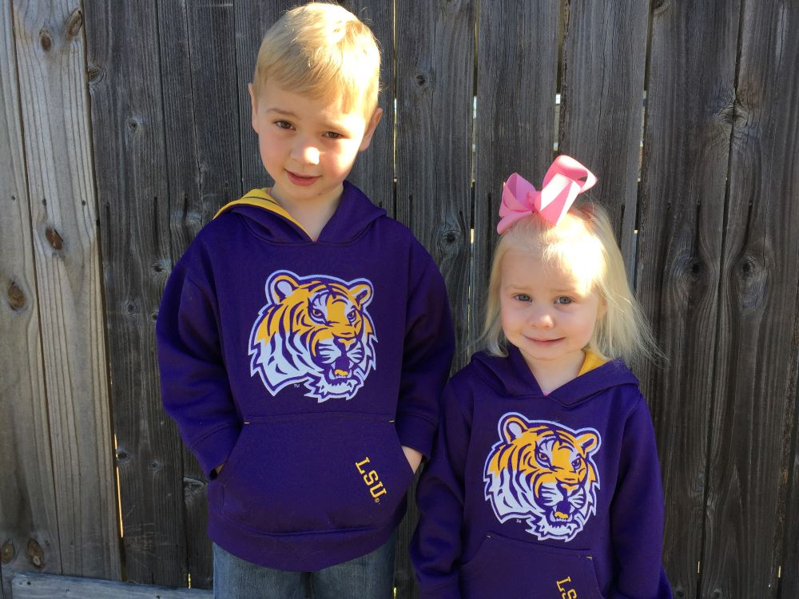

We looked forward to this day for months. Clear skies and a cool breeze set the stage for a fun evening with my son at our first LSU Football game together. The Rice Owls were the latest victims to trip to Red Stick with little more than hope on their side.
With our best purple and gold protection from what was sure to be a chilly night in Baton Rouge, a short trip down Interstate-10 brought Liam and I to the capital of college football. Tiger Stadium. "The place where opponents' dreams come to die," a wise man once said in reflection of another Tiger victory.
Those words would prove true once again on this night with Owl on the menu.
Page 1